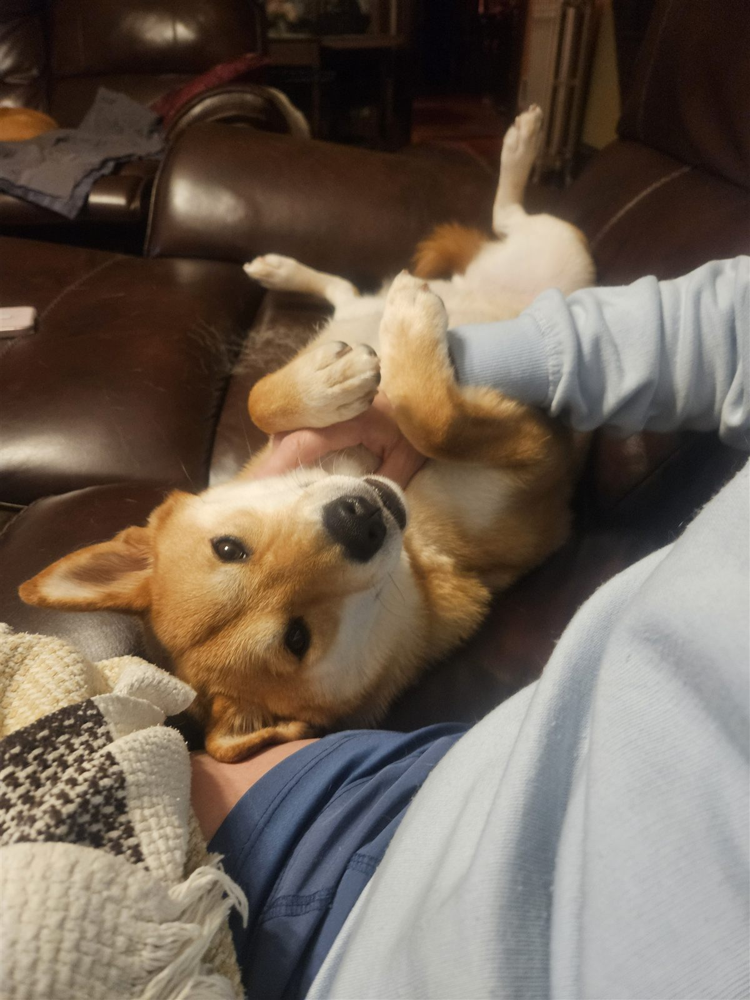
Big Sister
- NameLola
- Born10-23-2020
- PersonalitySassy, but sweet
- Favorite thingTreats
// the real bosses of the house
Our two Shiba Inus. They're sisters, same parents, from different litters.

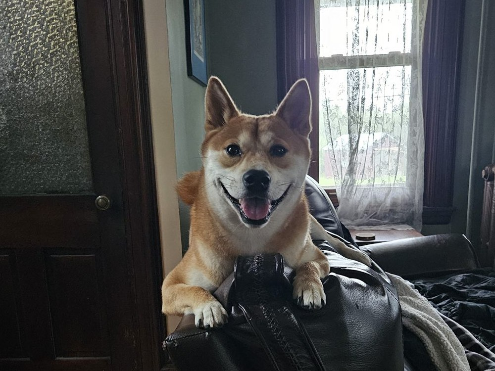
Placeholder: how each of them came home, and what it's like living with two Shibas.
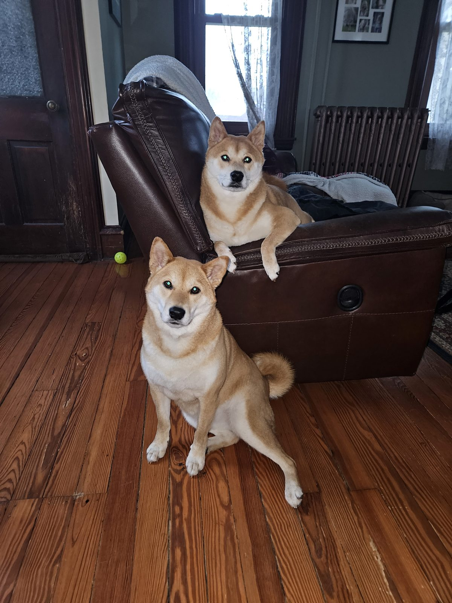
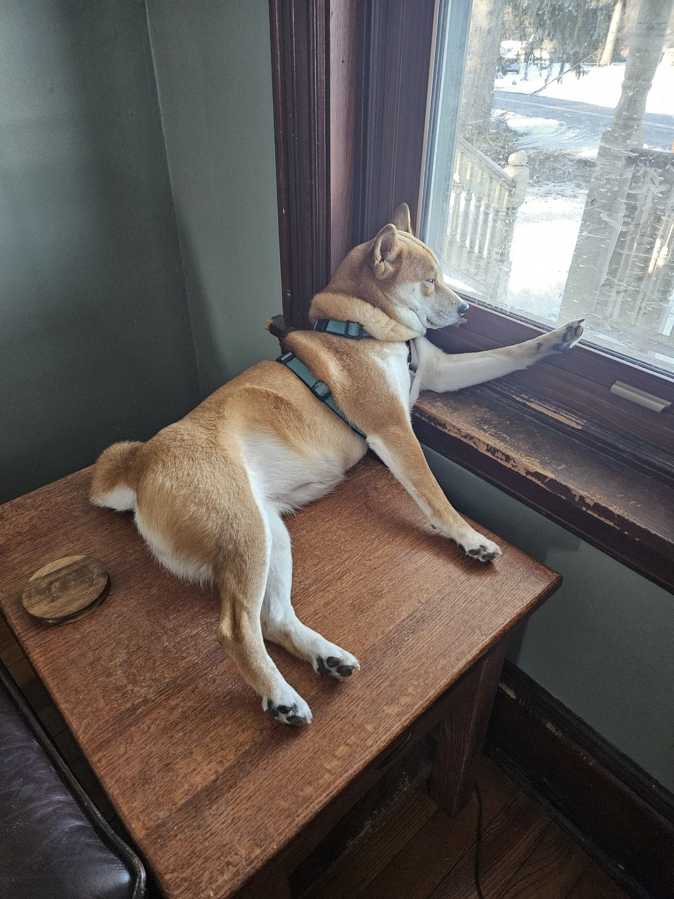
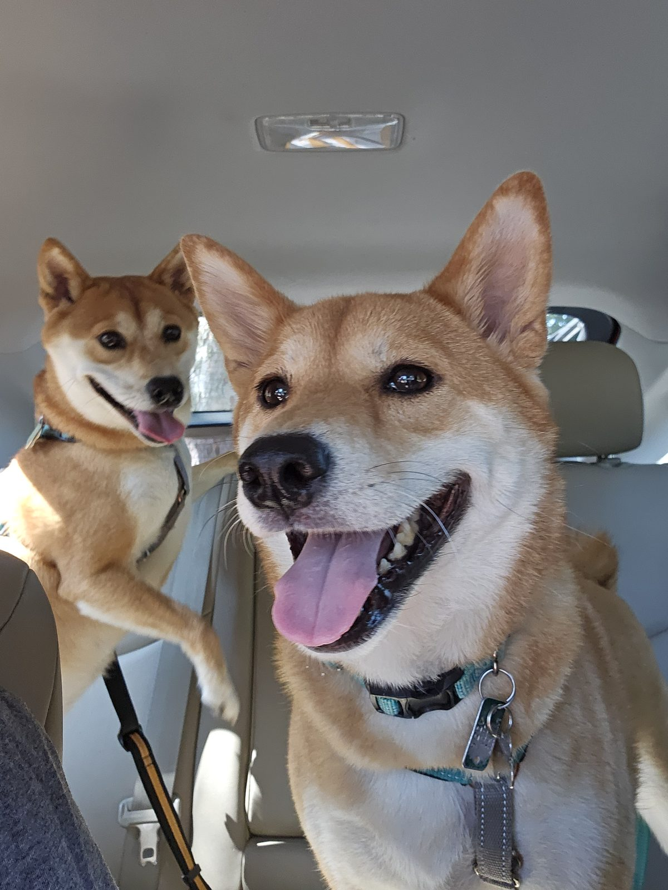
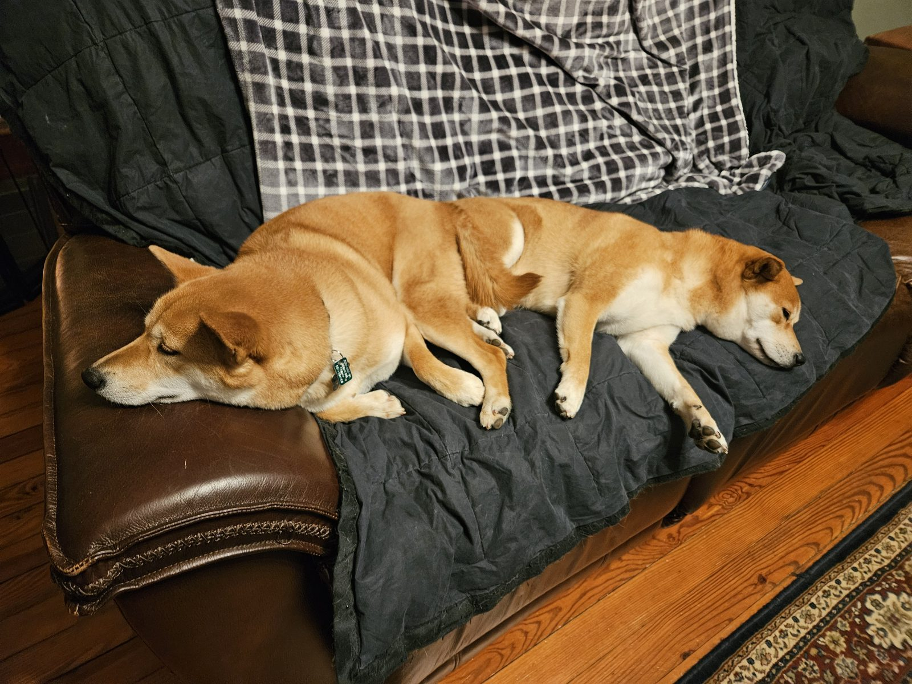
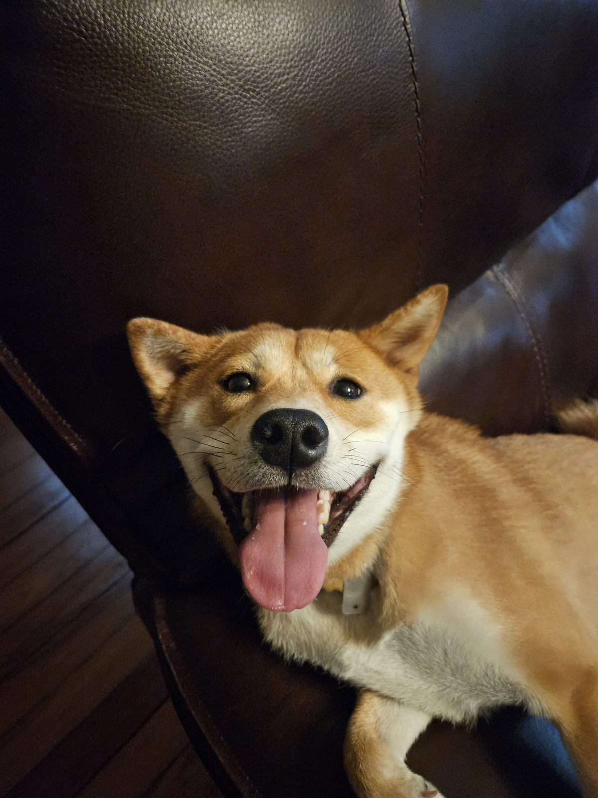
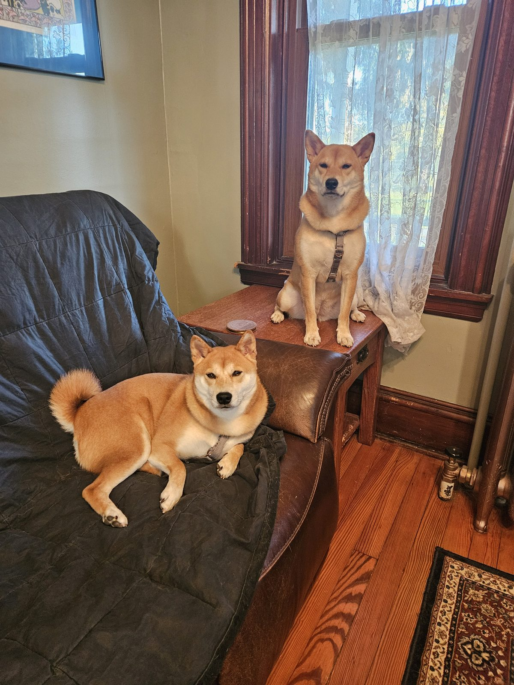
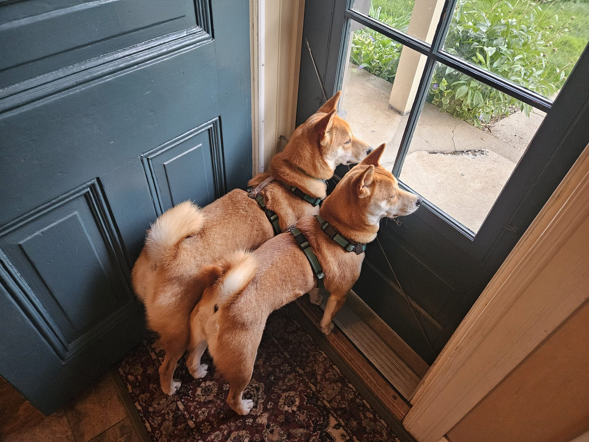
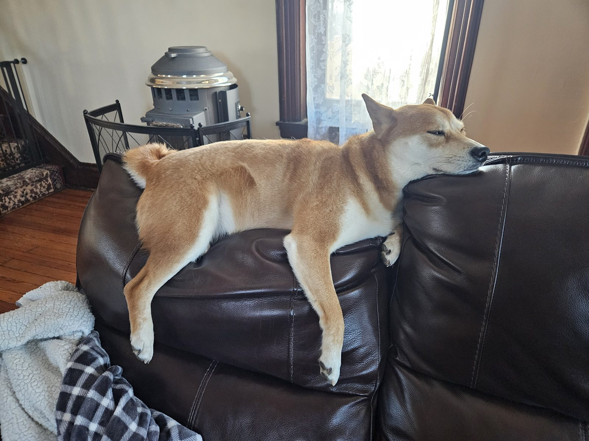
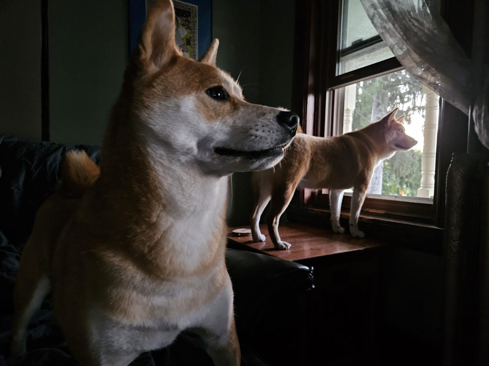